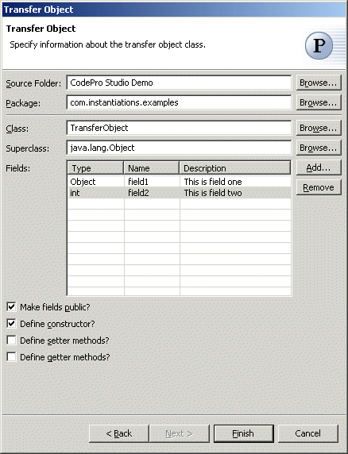

Transfer Object Pattern
The  Transfer Object pattern
encapsulates the business data returned by an enterprise bean
Transfer Object pattern
encapsulates the business data returned by an enterprise bean
in response to a client request.
Wizard
Applicability
Additional Resources
Wizard
| Option | Description | Default |
| Source folder | Enter a source folder for the transfer object class. Either type a valid source folder path or click Browse to select a source folder via a dialog. | The source folder of the element that was selected when the wizard was started. |
| Package | Enter a package to contain the transfer object class. Either type a valid package name or click Browse to select a package via a dialog. | The package of the element that was selected when the wizard was started. |
| Class | Enter a name for the transfer object class. Either type a valid class name or click Browse to select a class via a dialog. | <TransferObject> |
| Superclass | Enter a name for the superclass of the transfer object class. Either type a valid class name or click Browse to select a class via a dialog. | <java.lang.Object> |
| Fields | Specify the fields of the transfer object class, including short descriptions to be included in the javadoc, as in "@param field1 the <description>". | <none> |
| Make fields public? | Indicate whether to make the specified fields public or private. | <true> |
| Define constructor? | Indicate whether to define a constructor that initializes the specified fields. | <true> |
| Define setter methods? | Indicate whether to define setter methods for the specified fields. | <false> |
| Define getter methods? | Indicate whether to define getter methods for the specified fields. | <false> |
Applicability
Use the Transfer Object pattern when- The number of calls made by the client to the enterprise bean impacts network performance.